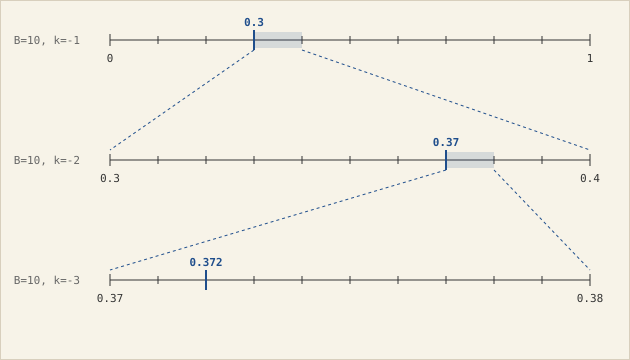
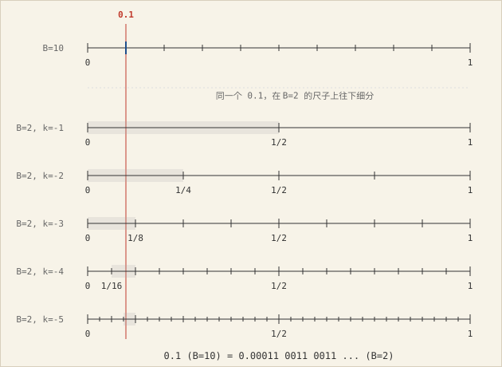
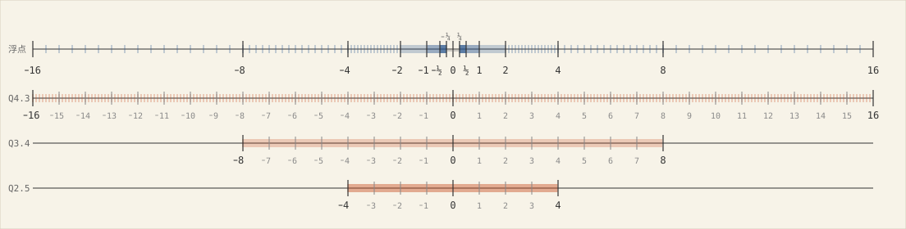
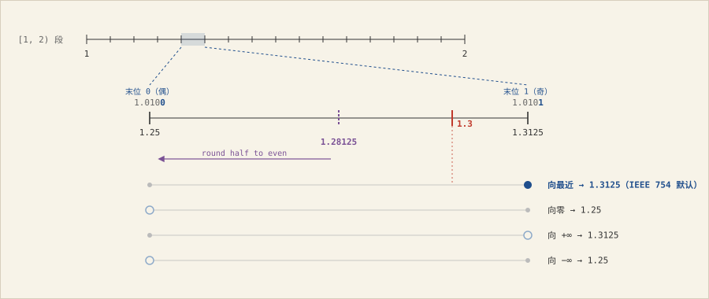
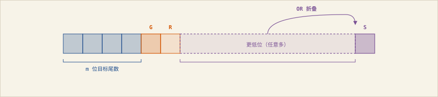
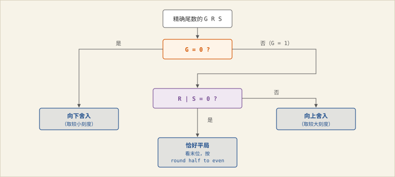

什么是数？
柏拉图主义认为数是真实存在的、非物质的、永恒且不变的”抽象实体”或”理念”。我倾向于把它看作一种思维方式，一种用来组织关于量的经验的抽象结构。无论哪种立场，有一件事是共识：数和数的表现形式是不同的。
同一个数（e.g. 13）可以有许多形式：
- 阿拉伯数字
13 - 罗马数字
XIII - 汉字
十三 - 英文
thirteen、法语treize - 计算机内存里的
00001101 - ASCII 字符串
"13"（两个字节0x31 0x33）
无论这些数的形式是什么样，发音是单音节还是多音节，这些形式中没有哪一个”更真实”。数甚至可以脱离一切经验符号而被精确刻画。皮亚诺公理用”零加后继”定义自然数（3 = succ(succ(succ(0)))），丘奇数用”把函数应用三次”这个行为来定义
3。不过那些是数学基础的话题，这里不展开。
回到日常书写。罗马数字里的 III、皮亚诺公理里的
succ(succ(succ(0)))，都可以看成同一种最原始的记数方式：重复
N 次同一个符号来表示数 N。这被称作一进制：数本身的”N
重性”直接暴露在符号上。一进制几乎不含表示技巧，虽然简单，却非常冗余。
历史上人类想出过很多办法来压缩这种冗长。罗马数字就是一例，用
I、V、X、L
等不同符号代表不同量级，XIII 只用四个字符就能写出
13。比起单符号的一进制，它只是换了一批更经济的符号，本质上仍然是加法记数系统：每个字符自带一个确定的值，把它们加起来就是这个数。
一进制和罗马数字尽管符号经济性不同，却共享一个特点：符号写在哪个位置都不影响它代表的量，XIII
拆开重排成 IIIX 读出来仍是
13，数一数、把各符号的值加起来就行。位置在这类系统里不携带信息。而计数方式真正的质变是让位置承载关键信息：同一个字符(d)写在不同位置代表不同数量
d·Bᵏ，其中 k 是数字所处的位置(从右起，从 0
开始)，B
是可用字符的数量，Bᵏ是这个数字的权重，权重与d相乘后才是它表达的数。这种计数方式被称作位置记数系统或进位法。
位置计数法的好处是信息密度呈指数级上升：表示 N
这么大的数，一进制要 N
个划道(|||||...)，位长和数值同阶；位置记数法的位长是
log_B(N)，数值每增大一个数量级，名字只长一位。数
1000
一进制要一千个划道，十进制只需四个字符，二进制也只要十个。位置记数法还有另一个好处：统一的小数点记法。位置权重本来是正整数
Bᵏ(k≥0)，对应”个位、十位、百位”；但公式 d·Bᵏ
对 k<0 同样成立，权重自然延伸到
B⁻¹、B⁻²，对应十进制里的十分位(k=-1)、百分位(k=-2)，小数点后的每一位就有了和整数位一样确定的权重。
当然，非整数的表达并不只有这一种办法。罗马人用过 1/12
的分数记法，古埃及用过单位分数
1/n，汉字也有”半”、“小半”。位置记数法的特别之处在于它给了非整数一种和整数同构的写法：同一个公式
d·Bᵏ，把 k 的范围从 k ≥ 0 扩张到
k ∈ ℤ，整数和小数就在同一套规则下统一起来了。
看一个具体的例子：我们写下 725时，脑子里对应的就是
7 · 10² + 2 · 10¹ + 5 · 10⁰，只是权重省掉没写出来，让位置隐式表达了。725本身就是这个展开式的一个缩写。再比如，二进制0b1101
只是字符表从 {0..9} 换成了 {0, 1}，展开是
1 · 2³ + 1 · 2² + 0 · 2¹ + 1 · 2⁰，用十进制表示就是
13。同样，3.14 缩写的是
3 · 10⁰ + 1 · 10⁻¹ + 4 · 10⁻²，个位、十分位、百分位，每个位置的权重按
10^k
往小数点的负方向延伸。二进制小数的形式也可直接依葫芦画瓢：0b10.11
是
1 · 2¹ + 0 · 2⁰ + 1 · 2⁻¹ + 1 · 2⁻²的缩写，它用十进制表达就是
2.75。
前面我们把B当作字符表的大小：B=10
就是十个字符，B=2
就是两个。换个直观的角度看，B
还是数轴上单位区间细分时的份数。
以十进制 0.372
为例。小数点后每多写一位，其实就是在当前这段区间上再做一次”分10份后取一段”。0.372
这三位数字直观上是从 [0, 1]
开始，这段分成10份、挑出第3段表示0.3，然后视野落在
[0.3, 0.4]；第 2 位 7 是把
[0.3, 0.4]
再分成10份、挑第7段，视野缩到[0.37, 0.38]；第3位2是把
[0.37, 0.38] 又分成 10 份、挑第2段。每多一位，视野缩小 10
倍，精度也提升10倍。

位置记数法的小数部分，就是这个”再分 B
份”的动作一层层递归。B=10 时每层分 10 份，B=2
时每层分 2 份，B=3 时每层分 3 份。
但不是所有有理数都长这样。十进制中1/3
的分母是3，但十进制的每一层等分都是 10 份，没有哪一层的刻度恰好落在
1/3 这个位置上，于是 1/3 在十进制里变成了
0.333...，小数点后有无穷多个
3。1/3用位置计数法有无穷多个数字不是1/3这个有理数本身的特性，而只是在十进制下的表现。把
B 换成 3，1/3 就是
0.1，一位就精确了，因为 B=3 的第一层等分正好把
[0, 1] 分成三份，第一个刻度就在 1/3 上。
也就是说，一个数在一把尺子(一种进制中)能准确找到它的位置，但换一把尺子就可能变得不再精确。1/10
在十进制里只要一位；但在二进制里，由于10不是2的任何幂，1/10
变成 0.0001100110011... 无限循环。

| 数 | 十进制 B=10 |
二进制 B=2 |
三进制 B=3 |
|---|---|---|---|
1/2 |
0.5（精确） |
0.1（精确） |
0.111... |
1/3 |
0.333... |
0.010101... |
0.1（精确） |
1/10 |
0.1（精确） |
0.0001100110011... |
0.00220022... |
对于这些无限的有理数小数，用进位法写出来的有限数字总是存在误差。但是每多一位小数数字，未被捕捉的那部分误差就缩小到原来的
1/B。十进制写 1/3 到
0.333，误差不到 1/1000；写到
0.333333，误差不到
1/10⁶。只要愿意多写几位，位置记数法对任何有理数都能逼近到任意精度，足够现实中使用。
科学计数法
位置计数法里，每一位的权重由它所在的位置隐式决定：个位是
10⁰，十位是 10¹，百位是 10²。写
725
时，“这串数字处于百位量级”这件事并没有被单独写出来，而是由最高位的位置自动给出。科学计数法把这个隐含的量级显式剥离出来：725 = 7.25 × 10²。尾数
7.25
内部仍是位置计数法（7 + 2·10⁻¹ + 5·10⁻²），负责记录有效数字；× 10²
负责标定量级，其中的 2
叫指数。尾数管精度、指数管量级，两者分离后可以独立调节：1.234 × 10⁵
和 1.234 × 10⁻⁴
共享同一组有效数字，却落在相差九个数量级的位置上。
浮点数
纸上写科学计数法，尾数想写几位就写几位。计算机不一样：一个数只能占固定的位数，常见的是
32 位或 64
位。位数一旦固定，尾数和指数就都得在有限位宽内定下来。最朴素的办法是把指数写死：所有数共用同一个量级
× 2ᵏ，k
由格式约定，不进编码。这就是定点数。
约定一个固定的
k，等价于约定小数点放在哪一位：32 位可以前
16 位当整数、后 16 位当小数(Q16.16)，也可以前 24 位当整数、后 8
位当小数(Q24.8)，整数位越多能表达的范围越大，小数位越多精度越细，范围与精度此消彼长。以无符号
Q16.16 为例，它覆盖 0
到六万出头、精度百万分之十五左右，够记账；但宇宙里的原子数是
10⁸⁰ 量级、电子质量是 10⁻³⁰
千克量级，两端都够不着。小数点往右挪能换来更大的范围，往左挪能换来更细的精度，可刻度总数就那么多，顾此失彼，怎么挪都无法同时照顾到”大范围、高精度”。
为什么挪小数点无法解决这个问题？关键在于定点数不管小数点放在哪里，刻度都是等距铺开的：Q16.16
每一格宽 2⁻¹⁶，Q24.8 每一格宽
2⁻⁸，前者细、后者粗，但在各自的格式里所有格子都一样宽。也就是说，整把尺子只有一个刻度间距，这个间距同时决定了两件事：小数能分辨多细，大数能覆盖多远。要分辨
10⁻³⁰ 就要求间距小到 10⁻³⁰ 量级；要够到
10⁸⁰ 就要求间距乘上有限的刻度数能跨过
10⁸⁰。一个数同时满足这两个条件是不可能的。挪小数点改变的只是这个间距取多少，改变不了”只有一个间距”这个约束，所以怎么选小数点位置都跳不出这个约束。
均匀刻度在小数处精度不够，在大数那里又浪费精度。因此可以把大数那边的分辨率降低，省下来的格子匀到
0
附近去，让刻度不均匀地分布：靠近0密、远离0疏。同样的刻度数就能覆盖广得多的数轴，代价是远处精度变糙，但这很合理，越大的数我们通常越能接受粗糙的精度（在
10⁸⁰
这个量级上，误差一万也无关紧要）。具体怎么实现？一个自然的办法是：按数量级分段，每段内部刻度均匀，不同段的间距不同，越远离0的段间距越大。
要让不同段有不同间距，就得让 k
能随数值变化，每个数自己带一个指数，这便是浮点数与定点数的关键区别：
- 定点数：指数由格式约定死（例如
Q16.16 一律
× 2⁻¹⁶），所有数共用同一个量级，格式里不存指数，位全给尾数 - 浮点数：指数由数自己决定，每个数带一个指数字段，位宽在尾数和指数之间分配
从这个角度看，浮点数是受限存储宽度的科学计数法，那具体用多少位来存尾数、多少位来存指数？IEEE 754 定义了 float32 和 float64 两种常见尺寸。它们将固定长度的表示格式分为 sign, exponent, mantissa 三段。以 float32 举例：
| sign | exponent | mantissa |
| S(1bit) | E (8 bits) | M (23 bits) |float8
为了视觉上直观把握浮点数的全貌，我们临时造一个 IEEE 754 里不存在的 float8，沿用”符号 + 指数 + 尾数”的三段布局，位宽1 + 3 + 4 合计 8 位，位数少到它能表达的所有数都画得进一张图。其规格如下：
| 参数 | 值 |
|---|---|
| 符号位 | 1 bit |
| 指数字段 | 3 bits，bias = 3 |
| 尾数字段 | 4 bits（+ 隐含前导 1 = 5 位精度） |
| 规范化指数范围 | 2⁻² 到 2³（字段值 1–6） |
| 特殊值 | 字段 0 → 零/subnormal；字段 7 → ±∞/NaN |

float8把数轴按 2
的幂分段：[1/4, 1/2)、[1/2, 1)、[1, 2)、[2, 4)、[4, 8)、[8, 16)，
每一段对应指数字段的一个取值，段内再用 4 位尾数等分成
2⁴ = 16
格。段越往外越宽，但每段里的刻度数都是16个，于是越往外刻度间距越大（[1, 2)
段间距 = 段宽 1 / 16 = 1/16；[8, 16) 段间距 =
段宽 8 / 16 =
0.5）。下面三条轴是8位定点数的分布。三种定点数轴都有256（2⁸）个刻度，均匀铺开，差别只在步长和覆盖范围。Q4.3
每格 1/8，覆盖
[-16, 16)，范围和浮点相当但0周围的精度更差；Q3.4 每格
1/16，覆盖 [-8, 8)；Q2.5 每格
1/32，覆盖
[-4, 4)，是三档里刻度最细的定点数。
对比图中8位的定点数，可以看出两者的关键区别：浮点的刻度间距随数量级变化，定点的刻度间距在整条轴上是常数。
规范化与特殊值
前面讲 float8 分段建立直觉时，我们让每个指数 k
对应唯一的段 [2ᵏ, 2ᵏ⁺¹)，段内 16 个刻度由尾数枚举。要让
k 唯一对应某一段，必须把尾数m限制在
[1, 2)，m × 2ᵏ 落在 [2ᵏ, 2ᵏ⁺¹)
里，k
刚好是段号，段之间不重叠，这种方法叫规范化。
规范化的尾数整数部分只能是 1，既然恒为
1，那我们便不需要在存储中对整数部分进行编码，省下这一位(1)的存储空间，省略的这个1被称作隐含前导
1。指数字段还有个小细节，指数既要表示正指数（大数）也要表示负指数（小数），一种直接的做法是拿一位当符号位。IEEE
754
选了另一种方案，偏移编码：把字段整体当无符号整数读，字段值
E 对应真实指数 E - bias。bias
按惯例取 2^(n-1) - 1（n
是指数字段位宽），float8 的 3 位指数字段就得到
bias = 2² - 1 = 3。因此，字段值 3 表示
2⁰，4 表示 2¹，2
表示 2⁻¹。偏移编码不影响”k
是段号”的逻辑，只是字段值怎么映射到 k 的一个实现约定。
特殊值。浮点数还要处理一些特殊情况：除以零该返回什么？0 × ∞
呢？开负数的平方根呢？IEEE 754
的做法是在指数字段里留出哨兵值：
- 指数字段全
1：尾数全 0 表示无穷大（+∞、-∞），尾数非 0 表示 NaN。 - 指数字段全
0：表示零和次正规数（subnormal，下面会讲）。
大数那一端，本来字段值全 1 还对应一段规范化（float8
里就是 [16, 32)），现在让位给 ±∞ 和
NaN。小数那一端，规范化机制本身表达不了 0，全 0
这个取值正好闲置，被拿来表示 0。float8 的规范化段从 8 段缩到 6
段，就是图里的 [1/4, 1/2) 到 [8, 16)。
最小的规范化段是
[1/4, 1/2)，再往里就空了：(-1/4, +1/4)
区间里一个规范化数都没有，任何落在这里的非零结果都会被直接冲刷为 0。这叫
abrupt
underflow（突然下溢）：小于最小规范化数的值无处安放，只能归零。它的后果很刺眼：假设
a ≠ b，差值 ε = a − b 在实数轴上非零，但只要
ε 落进
(0, 1/4)，浮点数找不到刻度容纳它，结果就是 0。于是
a ≠ b 和 a − b == 0
同时成立，“不相等的数相减不为零”这条直觉被破坏。
指数字段能表示的最小指数就是
2⁻²，再往下没有更小的指数可写。想在 [1/4, 1/2)
和 0 之间再铺出刻度，一个自然的做法是：指数保持在
2⁻² 不变，让尾数继续往 0
方向靠近。具体来说，规范化段里尾数形如
1.xxxx，现在允许尾数首位从 1 退到
0，写成 0.xxxx。这样尾数可以从
0.1111 一路取到 0.0000，乘上共同的
2⁻²，对应的数值就从 15/64 递减到
0，刚好把 [0, 1/4) 这段空白铺满。这批数叫
subnormal（次正规数）。
这样构造出来的 subnormal 段和最小规范化段共享同一个指数
2⁻²，所以两者的刻度间距相等（都是
1/64）。subnormal 覆盖
[0, 1/4)，最小规范化段覆盖
[1/4, 1/2)，两段宽度都是 1/4。这不是 float8
的特例，对任何 IEEE 754 格式都成立：subnormal 的构造就是把尾数从
1.xxxx（规范化）扩展到
0.xxxx，等价于在相同的最小指数下把覆盖从
[1, 2) 延伸到 [0, 1)，两段天然等宽、等间距。16
个 subnormal 刻度和 16 个 [1/4, 1/2) 规范化刻度拼起来，就是
[0, 1/2) 区间里 32 条均匀间距的刻度线，在 1/4
处无缝衔接。图里 0 两侧的小圆点，代表的就是这批 subnormal 数。
这种均匀衔接对感官直觉有一些影响。前面我们说”段越往外越宽”，反过来看，越靠近
0 的段应当越窄，刻度越密：[1/4, 1/2) 往下本该是
[1/8, 1/4)、[1/16, 1/8)……，间距依次变为
1/128、1/256，越来越细。但 subnormal
段的间距锁在
1/64，不再跟着往下变细。带来的好处是：非零差不会像 abrupt
underflow 那样一步跳到 0，而是先在 subnormal
刻度上逐级变小。这种逐级下沉叫”gradual
underflow（渐进下溢）“。
上面这些机制都在假设的 float8 上进行分析。IEEE 754 的 float32、float64 除了位宽不同，机制完全一样：
- float32：1 位符号 + 8 位指数 + 23
位尾数。
bias = 127，规范化段有2⁸ − 2 = 254段，对应指数范围2⁻¹²⁶到2¹²⁷。尾数字段 23 位 + 前导 1 = 24 位精度。 - float64：1 位符号 + 11 位指数 + 52
位尾数。
bias = 1023，规范化段2¹¹ − 2 = 2046段，指数范围2⁻¹⁰²²到2¹⁰²³。尾数字段 52 位 + 前导 1 = 53 位精度。
两者的规范化、subnormal、±∞、NaN 编码规则和 float8
一一对应，只是段数更多、段内刻度更密。
舍入
前面讨论的都是”哪些数能被刻度精确表示”。但浮点数真正面对的是任意实数，绝大多数实数并不会恰好落在某条刻度上。一个浮点格式的尾数位数一旦定下，段内刻度就只有有限个；落在两条相邻刻度之间的实数没有专属编码，必须被映射到附近的某条刻度上，这个映射动作就是舍入。
以 float8 为例，段 [1, 2) 由 4 位尾数等分成 16
格，刻度依次是
1.0000、1.0001、1.0010、…、1.1111，对应十进制的
1、1.0625、1.125、…、1.9375，相邻两条刻度间距
1/16。十进制的 1.3 不在这 16
条刻度里，离它最近的两个数是 1.25（1.0100）和
1.3125（1.0101），舍入要做的就是从这两个数挑一个把
1.3 映射过去。
挑哪一个？常见有几种规则：
- 最近：选离
1.3更近的那条。1.3距1.25是0.05，距1.3125是0.0125，更近的是1.3125。 - 向零：往 0
的方向取，正数选较小那条，负数选较大那条。
1.3选1.25。 - 向
+∞：永远选不小于原值的那条。1.3选1.3125。 - 向
−∞：永远选不大于原值的那条。1.3选1.25。

“最近”舍入最符合直觉，但它在一种情况下没有给出答案：如果实数恰好落在两条刻度正中间呢？比如
1.28125 距 1.25 和 1.3125 都是
0.03125，往哪边都行。如果固定挑某一边（比如总往上取），把大量这类正中间的样本累加起来，结果会系统性地偏向那一边。IEEE
754 的默认规则是向最近，平局取偶数尾数（round half to
even）：正中间的情形看尾数的末位 bit，挑使末位为
0（偶）的那条。上图放大轴上方已标出两条刻度的末位：1.0100
末位为 0（偶），1.0101 末位为
1（奇），平局点 1.28125 因此被映射到
1.25。这样平局向上和向下的概率均匀，长程累加不会把误差攒到某一边。
舍入误差的大小和它落在哪一段直接相关。[1, 2) 段间距
1/16，向最近舍入的误差至多是间距的一半，即
1/32。[2, 4) 段间距翻倍到
1/8，误差上限也翻倍到
1/16。绝对误差跟着段宽走，但相对误差始终被段内间距与段起点的比值压住：[1, 2)
段相对误差不超过 (1/32)/1 ≈ 3%，[2, 4)
段不超过
(1/16)/2 ≈ 3%，每段都是同一个量级。这正是浮点数刻度按指数分段的好处：误差以相对形式在整条数轴上保持稳定，不会因为数变大就失控。
float32、float64 的舍入机制和 float8 一致，默认也是 round half to
even，只是尾数位数更多，单步舍入的相对误差更小。float32 段内 24
位精度，相对误差量级约 2⁻²⁴；float64 段内 53
位精度，相对误差量级约 2⁻⁵³。
把舍入这个动作反过来看，会得到一个新的视角：每个浮点刻度代表的不是一个点，而是一小段区间。向最近舍入的规则是”离谁近归谁”，所以每条刻度的”势力范围”就是它左右各到相邻刻度的一半。以
float8 的 1.25 为例，它左边相邻刻度是
1.1875，右边是 1.3125，于是 1.25
真正覆盖的是 [1.21875, 1.28125) 这一段，宽度等于段内间距
1/16。落在这段区间里的任何实数，写进 float8
后都会变成同一个 1.25。前面作为平局点出现的
1.28125，几何上正是 1.25 和
1.3125 两个势力范围的边界，round half to even
的作用就是在这种边界处决定归属。
这个视角解释了为什么浮点相等比较要小心：两个实数只要落进同一条刻度的势力范围就被视作相等，哪怕它们在实数轴上本不相同。float32、float64
的每一个浮点数同样各自代表一小段区间，只是刻度更密、势力范围更窄。以
[1, 2) 段为例，float8 用 4 位尾数把它等分成 16 份，刻度间距
1/16；float32 用 23 位尾数等分成 2²³
份，刻度间距 2⁻²³；float64 用 52 位尾数等分成
2⁵² 份，刻度间距
2⁻⁵²。往更大的段走，间距按量级同比例放宽。
浮点运算
前面建立了浮点数的静态图像：一条刻度不均匀的数轴。现在来看这些刻度上的数参与运算时会发生什么。
浮点运算的基本模型很简单：先按数学定义算出精确结果，再把结果舍入到最近的浮点刻度上。IEEE 754 要求加减乘除和开方都遵守这个模型，即所谓”正确舍入”（correctly rounded）。
这个模型听起来直接，但硬件落地时有一个困难：尾数存储器是定宽的，运算过程中的中间形式所需的存储往往比存储器宽（甚至无穷），多出来的低位没处存放。如果直接截掉，舍入方向就可能出错。
Guard / Round / Sticky
正确舍入要求硬件在做完运算后，能判断数学精确结果落在相邻两条刻度之间的什么位置。最直接的办法是用一个比目标格式更宽的内部寄存器完成运算，让精确结果（或足够逼近精确结果的中间值）先完整落在这个宽寄存器里，再根据多出来的低位决定舍入方向。换句话说，硬件内部暂时工作在一个”不需要舍入”的加宽格式中，运算结束后再把结果收窄到目标位宽。问题是：这个加宽格式需要比目标宽多少位，才刚好够做出正确的舍入判断？

以 float8 加法为例，计算 1.0100 × 2⁰ 加
1.0111 × 2⁻²（十进制
1.25 + 0.359375）。加法要先把两个数对齐到同一指数，把小的数右移
2 位：
1.0100 00 × 2⁰
+ 0.0101 11 × 2⁰
= ----------
1.1001 11数学结果 1.1001 11 有 6 位小数部分，但 float8 尾数只有 4
位。它落在相邻两条刻度 1.1001 和 1.1010
之间，中间点是 1.1001 1000，而结果 1.1001 1100
严格大于中间点，按向最近舍入应取
1.1010。但如果硬件只保留对齐后的 4
位尾数，将加数 1.0111 × 2⁻²右移时溢出的
11 截掉，加完得到
1.1001，被当成结果正好落在刻度上，错误地得到1.1001。正确结果和错误结果差了一个刻度间距(ULP)。
完整保留所有溢出的位是最安全的做法，但对 float64 这种 52 位尾数来说，简单的加法操作最坏情况可能要保留几十位的尾巴，硬件代价大。那保留多少位才够正确舍入呢？
数学结果若正好落在某条刻度上就无需舍入；需要舍入时，决策只关心结果落在相邻两条刻度之间的什么位置，具体分三种情形：
- 严格小于平局点：向较小的刻度舍入
- 恰好等于平局点：按 round half to even
- 严格大于平局点：向较大的刻度舍入
怎么判断落在哪种情形？设目标尾数宽 m 位，把数学结果第
m+1 位及以下统称”尾巴”：
- 第
m+1位 = 0：尾巴整体小于半个间距，向较小刻度舍入。 - 第
m+1位 = 1，且后面所有位全是 0：恰好平局，看末位偶数规则。 - 第
m+1位 = 1，且后面有任何一位是 1：严格大于平局，向较大刻度舍入。
第一位是判定”是否过半”的关键，叫 Guard（保护位）。但只看 Guard 不够：当 Guard=1，还得分辨”恰好平局”和”严格大于平局”。直觉上要把后面所有位都保留下来才能分辨，但其实只需要知道”后面有没有任何一位是 1”，因为：
- 后面全 0 → 恰好平局
- 后面任何位是 1 → 严格大于平局
这是一次”OR 折叠”：把任意多位的低位压成一个布尔值。这个 OR 结果就是 Sticky（粘连位）：一旦某位为 1，它就被”粘住”不再变 0，无论后面还有多少位。Sticky 的妙处在于：用一位记住了无穷多位低位是否非零的信息。
Guard + Sticky 两位信息似乎已经足够应对舍入的判断，但减法运算下还需要更多信息：
例如，计算 1.0000 × 2³ 减
1.1010 × 2⁻¹（十进制
8 − 0.8125 = 7.1875）。指数差 4，对齐时把
1.1010 右移 4 位。假设只保留 Guard + Sticky 两位（G
存右移溢出的第一位，其余位 OR 折叠进 S），移出的 4 位 1010
变为 G=1, S=OR(010)=1：
| G S
1.0000 | 0 0 × 2³
− 0.0001 | 1 1 × 2³ 移出的 1010 → G=1, S=OR(010)=1
= 0.1110 | 0 1 × 2³ 借位后做减法
↓ 左移 1 位规范化：原 G(0) 进入尾数末位，原 S(1) 成为新 G，新 S 无信息来源 → 0
= 1.1100 | 1 0 × 2²新 G=1 且新
S=0，表示”至少半”，但无法区分”恰好半”和”严格超过半”。硬件只能按平局处理，尾数末位
0 是偶数，round half to even 不进位，得 1.1100 × 2² =
7.0。
但精确答案 7.1875 = 1.1100 11 × 2²，落在刻度 7.0 与 7.25
的中点 7.125 之上，正确结果应为 7.25。差了一个 ULP。
解决办法是在 Guard 和 Sticky 之间多保留一位精确值，叫
Round（舍入位）。有了 Round，右移 4 位时移出的
1010 中前两位分别填入 G=1、R=0，剩余两位 OR 折叠得
S=OR(10)=1。运算结果和左移过程：
| G R S
1.0000 | 0 0 0 × 2³
− 0.0001 | 1 0 1 × 2³ 移出的 1010 → G=1, R=0, S=OR(10)=1
= 0.1110 | 0 1 1 × 2³ 借位后做减法
↓ 左移 1 位规范化：原 G(0) 进入尾数末位，原 R(1) 成为新 G，原 S(1) 成为新 S
= 1.1100 | 1 1 × 2²左移后，原来的 G 进入尾数末位，原来的 R 成为新 Guard = 1，原来的 S
成为新 Sticky = 1。新 Guard = 1 且新 Sticky =
1，判定”严格超过半”，向上舍入，得到
1.1101 × 2² = 7.25，符合舍入预期。
左移超过 1 位的情况不需要担心：大量高位消去只在指数差 ≤ 1 时才可能发生（指数差 ≥ 2 时大数的首位不会被抵消），而指数差 ≤ 1 的两个 m 位尾数相减，精确结果最多 m+1 个有效位。若前导零多于 1 位，左移规范化后剩余有效位不超过 m−1，全部装进 m 位尾数绰绰有余，不需要舍入。
不进行左移操作时，只需要使用G判断”是否过半”，R|S 判断”是否严格超过半”。左移 1 位时，G 被吞进尾数，R 成为新的 Guard，S 成为新的 Sticky，舍入判断照常进行。

G R S
三位足以让硬件在不保留完整尾巴的情况下做出与”先精确算再舍入”完全一致的决策。决策过程按
G、R|S 两层分支展开。
舍入误差
正确舍入保证的是：每做一次运算，结果最多偏离精确值半个刻度间距。用
float8 的 [1, 2) 段举例，段内间距 1/16。
1.25 + 0.0625 = 1.3125。数学结果恰好落在刻度上，无需舍入，误差为零。1.25 + 0.03125 = 1.28125。结果正好落在1.25和1.3125正中间，按 round half to even 舍到1.25，误差0.03125，等于半个间距。1.25 + 0.0078125 = 1.2578125。结果离1.25更近，舍到1.25，误差0.0078125，小于半个间距。
三组例子中，最坏情况是第二组：数学结果恰好落在两条刻度正中间，无论往哪边舍都差半个间距。半个间距就是向最近舍入的绝对误差上界。
不同段的绝对上界不同。[1, 2) 的间距
1/16，上界 1/32；[2, 4) 的间距
1/8，上界
1/16。段越大，绝对误差上界越大。但看相对误差（误差除以数值本身），每一段都差不多：(1/32)/1 ≈ 3%，(1/16)/2 ≈ 3%。相对误差在整条数轴上保持稳定，这正是浮点按指数分段的核心好处。
误差放大
单次舍入误差有界且可控，但某些运算模式会把已有的微小误差急剧放大。
加法里”小被大吃”。
两个加数量级悬殊时，小数的全部信息可能落在大数所在段的半个间距以下，加了等于没加。float8
里 8 + 0.125：数学结果 8.125，但
8 所在的段 [8, 16) 的间距 = 段宽 8 / 16 刻度 =
0.5，半个间距是 0.25，而
0.125 < 0.25，不够半个间距，舍入后结果仍是
8。小数被”吞掉”了。
这个现象在累加大量小数时尤其致命。假设要把一百万个 0.125
加到 8 上，正确结果是
125008，但如果从左到右逐个累加，每一步都是”大数 +
小数”，小数每次都被吞掉，结果始终是 8。
一种经典的应对方法是 Kahan 求和（补偿求和）。思路是：每次加法被吞掉的部分不扔掉，而是记在一个”补偿变量”里，下一次加法时把补偿也带上。伪代码如下：
sum = 0
c = 0 // 补偿变量，记录累积的舍入误差
for x in data:
y = x - c // 用上次的补偿修正本次输入
t = sum + y // 这一步可能吞掉 y 的低位
c = (t - sum) - y // (t - sum) 是实际加上去的部分，减去 y 就是被吞掉的误差
sum = tc
每一轮都捕获了本次加法丢失的尾巴，下一轮再补回去。对于简单累加场景，Kahan
求和能把误差从 O(n) 压到 O(1)，只多一个变量和几次额外运算。
减法里”灾难性抵消”。
两个量级相近的数相减，高位相消，只剩低位的差。如果输入本身已经是舍入过的近似值，低位早已不精确，相减把原本藏在高位下面的舍入噪声暴露成了结果的主体，有效位数大幅缩水。例如真实值
1.0001 和 0.9999 在 float8 里都被舍入到
1.0，真实差 0.0002 变成了
1.0 − 1.0 = 0，结果与真实差完全无关。
灾难性抵消的应对思路通常不是在减法本身上做文章，而是改写公式，让相近的数不需要相减。求解一元二次方程是一个经典例子。求根公式
(-b + √(b²-4ac)) / 2a 在 b > 0 且
b² ≫ 4ac 时，分子里 -b 和
√(b²-4ac) 非常接近，相加会抵消。替代做法是利用韦达定理
x₁·x₂ = c/a：先用不抵消的那个根（(-b - √(b²-4ac)) / 2a）算出
x₂，再用 x₁ = c/(a·x₂)
得到另一个根，绕开了相近数相减的问题。
这两种现象在多步运算链中还会叠加：上一步的输出是下一步的输入，舍入误差沿链路逐步累积；一旦遇到灾难性抵消，累积的误差被一次性放大。
浮点数的有限位宽决定了舍入不可消除，但误差的累积和放大并非不可控。应对的方向不是追求更多位数（虽然 float64 比 float32 精度高得多，但面对同样的数值陷阱只是推迟问题），而是选择让误差不容易累积的计算路径。在浮点的世界里，数学上等价的写法在数值上并不等价，选择计算路径也是工程决策的重要部分。
一个经典例子：0.1 + 0.2 ≠ 0.3
把前面所有机制串在一起，看一个几乎每个程序员都会遇到的现象。
十进制 0.1 在二进制里是无限循环小数
0.0001100110011...。float64 用 53
位精度截断它，舍入后存储的值并不精确等于 0.1，而是比
0.1 稍大一点。同理，0.2 存储的值也比
0.2 稍大。两个”稍大”相加，结果比精确的 0.3
更大；而 0.3 本身存储时被舍入到的方向恰好略小于
0.3。于是 0.1 + 0.2 的浮点结果和
0.3 的浮点表示落在了不同的刻度上，差一个 ULP。这不是
bug，而是二进制浮点在有限精度下的必然结果。
附录：浮点数对比
| 参数 | “float8” | float32 | float64 |
|---|---|---|---|
| 总位宽 | 8 | 32 | 64 |
| 符号 / 指数 / 尾数 | 1 / 3 / 4 | 1 / 8 / 23 | 1 / 11 / 52 |
| bias | 3 | 127 | 1023 |
| 有效精度（含前导 1） | 5 bits | 24 bits ≈ 7.2 位十进制 | 53 bits ≈ 15.9 位十进制 |
| 最小规范化数 | 2⁻² = 0.25 |
2⁻¹²⁶ ≈ 1.18 × 10⁻³⁸ |
2⁻¹⁰²² ≈ 2.22 × 10⁻³⁰⁸ |
| 最大有限数 | 15.5 | ≈ 3.40 × 10³⁸ | ≈ 1.80 × 10³⁰⁸ |